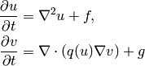

Doconce Description¶
| Author: | Hans Petter Langtangen |
|---|---|
| Date: | August 27, 2010 |
What Is Doconce?¶
Doconce is two things:
- Doconce is a working strategy for documenting software in a single place and avoiding duplication of information. The slogan is: “Write once, include anywhere”. This requires that what you write can be transformed to many different formats for a variety of documents (manuals, tutorials, books, doc strings, source code documentation, etc.).
- Doconce is a simple and minimally tagged markup language that can be used for the above purpose. That is, the Doconce format look like ordinary ASCII text (much like what you would use in an email), but the text can be transformed to numerous other formats, including HTML, Wiki, LaTeX, PDF, reStructuredText (reST), Sphinx, Epytext, and also plain text (where non-obvious formatting/tags are removed for clear reading in, e.g., emails). From reStructuredText you can go to XML, HTML, LaTeX, PDF, OpenOffice, and from the latter to RTF and MS Word.
The first point may be of interest even if you adopt a different markup language than Doconce, e.g., reStructuredText or Sphinx.
So why not just use reStructuredText or Sphinx? Because Doconce
- can convert to plain untagged text, more desirable for computer programs and email,
- has less cluttered tagging of text,
- has better support for copying in computer code from other files,
- has stronger support for mathematical typesetting,
- works better as a complete or partial source for large LaTeX documents (reports and books).
Anyway, after having written an initial document in Doconce, you may convert to reStructuredText or Sphinx and work with that version for the future.
Doconce was particularly written for the following sample applications:
- Large books written in LaTeX, but where many pieces (computer demos, projects, examples) can be written in Doconce to appear in other contexts in other formats, including plain HTML, Sphinx, or MS Word.
- Software documentation, primarily Python doc strings, which one wants to appear as plain untagged text for viewing in Pydoc, as reStructuredText for use with Sphinx, as wiki text when publishing the software at googlecode.com, and as LaTeX integrated in, e.g., a master’s thesis.
- Quick memos, which start as plain text in email, then some small amount of Doconce tagging is added, before the memos can appear as MS Word documents or in wikis.
You can jump to the section The Doconce Software Documentation Strategy to see a recipe for how to use Doconce, but first some more motivation for the problem which Doconce tries to solve is presented.
Motivation: Problems with Documenting Software¶
Duplicated Information. It is common to write some software documentation in the code (doc strings in Python, doxygen in C++, javadoc in Java) while similar documentation is often also included in a LaTeX or HTML manual or tutorial. Although the various types of documentation may start out to be the same, different physical files must be used since very different tagging is required for different output formats. Over time the duplicated information starts to diverge. Severe problems with such unsynchronized documentation was the motivation for developing the Doconce concept and tool.
Different Tagging for Different Formats. A problem with doc strings (in Python) is that they benefit greatly from some tagging, Epytext or reStructuredText, when transformed to HTML or PDF manuals. However, such tagging looks annoying in Pydoc, which just shows the pure doc string. For Pydoc we should have more minimal (or no) tagging (students and newbies are in particular annoyed by any unfamiliar tagging of ASCII text). On the contrary, manuals or tutorials in HTML and LaTeX need quite much tagging.
Solution. Accurate information is crucial and can only be maintained in a single physical place (file), which must be converted (filtered) to suitable formats and included in various documents (HTML/LaTeX manuals/tutorials, Pydoc/Epydoc/HappyDoc reference manuals).
A Common Format. There is no existing format and associated conversion tools that allow a “singleton” documentation file to be filtered to LaTeX, HTML, XML, PDF, Epydoc, HappyDoc, Pydoc, and plain untagged text. As we are involved with mathematical software, the LaTeX manuals should have nicely typeset mathematics, while Pydoc, Epydoc, and HappyDoc must show LaTeX math in verbatim mode. Unfortunately, Epytext is annoyed by even very simple LaTeX math (also in verbatim environments). To summarize, we need
- A minimally tagged markup language with full support for for mathematics and verbatim computer code.
- Filters for producing highly tagged formats (LaTeX, HTML, XML), medium tagged formats (reStructuredText, Epytext), and plain text with completely invivisble tagging.
- Tools for inserting appropriately filtered versions of a “singleton” documentation file in other documents (doc strings, manuals, tutorials).
One answer to these points is the Doconce markup language, its associated tools, and the C-style preprocessor tool. Then we can write once, include anywhere! And what we write is close to plain ASCII text.
But isn’t reStructuredText exactly the format that fulfills the needs above? Yes and no. Yes, because reStructuredText can be filtered to a lot of the mentioned formats. No, because of the reasons listed in the section What Is Doconce?, but perhaps the strongest feature of Doconce is that it integrates well with LaTeX: Large LaTeX documents (book) can be made of many smaller Doconce units, typically describing examples and computer codes, glued with mathematical pieces written entirely in LaTeX and with heavy cross-referencing of equations, as is usual in mathematical texts. All the Doconce units can then be available also as stand-alone examples in wikis or Sphinx pages and thereby used in other occasions (including software documentation and teaching material). This is a promising way of composing future books of units that can be reused in many contexts and formats, currently being explored by the Doconce maintainer.
A final warning may be necessary: The Doconce format is a minimalistic formatting language. It is ideal when you start a new project when you are uncertain about which format to choose. At some later stage, when you need quite some sophisticated formatting and layout, you can perform the final filtering of Doconce into something more appropriate for future demands. The convenient thing is that the format decision can be posponed (maybe forever - which is the common experience of the Doconce developer).
Dependencies¶
Doconce depends on the Python package preprocess. To make LaTeX documents (without going through the reStructuredText format) you also need ptex2tex and some style files that ptex2tex potentially makes use of. Going from reStructuredText to formats such as XML, OpenOffice, HTML, and LaTeX requires docutils. Making Sphinx documents requires of course sphinx.
The Doconce Software Documentation Strategy¶
- Write software documentation, both tutorials and manuals, in the Doconce format. Use many files - and never duplicate information!
- Use #include statements in source code (especially in doc strings) and in LaTeX documents for including documentation files. These documentation files must be filtered to an appropriate format by the program doconce2format before being included. In a Python context, this means plain text for computer source code (and Pydoc); Epytext for Epydoc API documentation, or the Sphinx dialect of reStructuredText for Sphinx API documentation; LaTeX for LaTeX manuals; and possibly reStructuredText for XML, Docbook, OpenOffice, RTF, Word.
- Run the preprocessor preprocess on the files to produce native files for pure computer code and for various other documents.
Consider an example involving a Python module in a basename.p.py file. The .p.py extension identifies this as a file that has to be preprocessed) by the preprocess program. In a doc string in basename.p.py we do a preprocessor include in a comment line, say
# #include "docstrings/doc1.dst.txt
The file docstrings/doc1.dst.txt is a file filtered to a specific format (typically plain text, reStructedText, or Epytext) from an original “singleton” documentation file named docstrings/doc1.do.txt. The .dst.txt is the extension of a file filtered ready for being included in a doc string (d for doc, st for string).
For making an Epydoc manual, the docstrings/doc1.do.txt file is filtered to docstrings/doc1.epytext and renamed to docstrings/doc1.dst.txt. Then we run the preprocessor on the basename.p.py file and create a real Python file basename.py. Finally, we run Epydoc on this file. Alternatively, and nowadays preferably, we use Sphinx for API documentation and then the Doconce docstrings/doc1.do.txt file is filtered to docstrings/doc1.rst and renamed to docstrings/doc1.dst.txt. A Sphinx directory must have been made with the right index.rst and conf.py files. Going to this directory and typing make html makes the HTML version of the Sphinx API documentation.
The next step is to produce the final pure Python source code. For this purpose we filter docstrings/doc1.do.txt to plain text format (docstrings/doc1.txt) and rename to docstrings/doc1.dst.txt. The preprocessor transforms the basename.p.py file to a standard Python file basename.py. The doc strings are now in plain text and well suited for Pydoc or reading by humans. All these steps are automated by the insertdocstr.py script. Here are the corresponding Unix commands:
# make Epydoc API manual of basename module:
cd docstrings
doconce2format epytext doc1.do.txt
mv doc1.epytext doc1.dst.txt
cd ..
preprocess basename.p.py > basename.py
epydoc basename
# make Sphinx API manual of basename module:
cd doc
doconce2format sphinx doc1.do.txt
mv doc1.rst doc1.dst.txt
cd ..
preprocess basename.p.py > basename.py
cd docstrings/sphinx-rootdir # sphinx directory for API source
make clean
make html
cd ../..
# make ordinary Python module files with doc strings:
cd docstrings
doconce2format plain doc1.do.txt
mv doc1.txt doc1.dst.txt
cd ..
preprocess basename.p.py > basename.py
# can automate inserting doc strings in all .p.py files:
insertdocstr.py plain .
# (runs through all .do.txt files and filters them to plain format and
# renames to .dst.txt extension, then the script runs through all
# .p.py files and runs the preprocessor, which includes the .dst.txt
# files)
Demos¶
The current text is generated from a Doconce format stored in the
docs/manual/manual.do.txt
file in the Doconce source code tree. We have made a demo web page where you can compare the Doconce source with the output in many different formats: HTML, LaTeX, plain text, etc.
The file make.sh in the same directory as the manual.do.txt file (the current text) shows how to run doconce2format on the Doconce file to obtain documents in various formats.
Another demo is found in
docs/tutorial/tutorial.do.txt
In the tutorial directory there is also a make.sh file producing a lot of formats, with a corresponding web demo of the results.
From Doconce to Other Formats¶
Transformation of a Doconce document to various other formats applies the script doconce2format:
Unix/DOS> doconce2format format mydoc.do.txt
The preprocess program is always used to preprocess the file first, and options to preprocess can be added after the filename. For example,
Unix/DOS> doconce2format LaTeX mydoc.do.txt -Dextra_sections
The variable FORMAT is always defined as the current format when running preprocess. That is, in the last example, FORMAT is defined as LaTeX. Inside the Doconce document one can then perform format specific actions through tests like #if FORMAT == "LaTeX".
HTML¶
Making an HTML version of a Doconce file mydoc.do.txt is performed by
Unix/DOS> doconce2format HTML mydoc.do.txt
The resulting file mydoc.html can be loaded into any web browser for viewing.
LaTeX¶
Making a LaTeX file mydoc.tex from mydoc.do.txt is done in two steps: .. Note: putting code blocks inside a list is not successful in many .. formats - the text may be messed up. A better choice is a paragraph .. environment, as used here.
- Step 1. Filter the doconce text to a pre-LaTeX form mydoc.p.tex for
- ptex2tex:
Unix/DOS> doconce2format LaTeX mydoc.do.txt
LaTeX-specific commands (“newcommands”) in math formulas and similar can be placed in a file newcommands.tex. If this file is present, it is included in the LaTeX document so that your commands are defined.
Step 2. Run ptex2tex (if you have it) to make a standard LaTeX file,
Unix/DOS> ptex2tex mydoc
or just perform a plain copy,
Unix/DOS> cp mydoc.p.tex mydoc.tex
The ptex2tex tool makes it possible to easily switch between many different fancy formattings of computer or verbatim code in LaTeX documents. Finally, compile mydoc.tex the usual way and create the PDF file:
Unix/DOS> latex mydoc
Unix/DOS> latex mydoc
Unix/DOS> makeindex mydoc # if index
Unix/DOS> bibitem mydoc # if bibliography
Unix/DOS> latex mydoc
Unix/DOS> dvipdf mydoc
Plain ASCII Text¶
We can go from Doconce “back to” plain untagged text suitable for viewing in terminal windows, inclusion in email text, or for insertion in computer source code:
Unix/DOS> doconce2format plain mydoc.do.txt # results in mydoc.txt
reStructuredText¶
Going from Doconce to reStructuredText gives a lot of possibilities to go to other formats. First we filter the Doconce text to a reStructuredText file mydoc.rst:
Unix/DOS> doconce2format rst mydoc.do.txt
We may now produce various other formats:
Unix/DOS> rst2html.py mydoc.rst > mydoc.html # HTML
Unix/DOS> rst2latex.py mydoc.rst > mydoc.tex # LaTeX
Unix/DOS> rst2xml.py mydoc.rst > mydoc.xml # XML
Unix/DOS> rst2odt.py mydoc.rst > mydoc.odt # OpenOffice
The OpenOffice file mydoc.odt can be loaded into OpenOffice and saved in, among other things, the RTF format or the Microsoft Word format. That is, one can easily go from Doconce to Microsoft Word.
Sphinx¶
Sphinx documents can be created from a Doconce source in a few steps.
Step 1. Translate Doconce into the Sphinx dialect of the reStructuredText format:
Unix/DOS> doconce2format sphinx mydoc.do.txt
Step 2. Create a Sphinx root directory with a conf.py file, either manually or by using the interactive sphinx-quickstart program. Here is a scripted version of the steps with the latter:
mkdir sphinx-rootdir
sphinx-quickstart <<EOF
sphinx-rootdir
n
_
Name of My Sphinx Document
Author
version
version
.rst
index
n
y
n
n
n
n
y
n
n
y
y
y
EOF
Step 3. Move the tutorial.rst file to the Sphinx root directory:
Unix/DOS> mv mydoc.rst sphinx-rootdir
Step 4. Edit the generated index.rst file so that mydoc.rst is included, i.e., add mydoc to the toctree section so that it becomes
.. toctree::
:maxdepth: 2
mydoc
(The spaces before mydoc are important!)
Step 5. Generate, for instance, an HTML version of the Sphinx source:
make clean # remove old versions
make html
Many other formats are also possible.
Step 6. View the result:
Unix/DOS> firefox _build/html/index.html
Google Code Wiki¶
There are several different wiki dialects, but Doconce only support the one used by Google Code. The transformation to this format, called gwiki to explicitly mark it as the Google Code dialect, is done by
Unix/DOS> doconce2format gwiki mydoc.do.txt
You can then open a new wiki page for your Google Code project, copy the mydoc.gwiki output file from doconce2format and paste the file contents into the wiki page. Press Preview or Save Page to see the formatted result.
The Doconce Markup Language¶
The Doconce format introduces four constructs to markup text: lists, special lines, inline tags, and environments.
Lists¶
An unordered bullet list makes use of the * as bullet sign and is indented as follows
* item 1
* item 2
* subitem 1, if there are more
lines, each line must
be intended as shown here
* subitem 2,
also spans two lines
* item 3
This list gets typeset as
- item 1
- item 2
- subitem 1, if there are more lines, each line must be intended as shown here
- subitem 2, also spans two lines
- item 3
In an ordered list, each item starts with an o (as the first letter in “ordered”):
o item 1
o item 2
* subitem 1
* subitem 2
o item 3
resulting in
- item 1
- item 2
- subitem 1
- subitem 2
- item 3
Ordered lists cannot have an ordered sublist, i.e., the ordering applies to the outer list only.
In a description list, each item is recognized by a dash followed by a keyword followed by a colon:
- keyword1: explanation of keyword1
- keyword2: explanation
of keyword2 (remember to indent properly
if there are multiple lines)
The result becomes
- keyword1:
- explanation of keyword1
- keyword2:
- explanation of keyword2 (remember to indent properly if there are multiple lines)
Special Lines¶
The Doconce markup language has a concept called special lines. Such lines starts with a markup at the very beginning of the line and are used to mark document title, authors, date, sections, subsections, paragraphs., figures, etc.
idx{TITLE keyword} idx{AUTHOR keyword} idx{DATE keyword}
Lines starting with TITLE:, AUTHOR:, and DATE: are optional and used to identify a title of the document, the authors, and the date. The title is treated as the rest of the line, so is the date, but the author text consists of the name and associated institution(s) with the syntax
name at institution1 and institution2 and institution3
The at with surrounding spaces is essential for adding information about institution(s) to the author name, and the and with surrounding spaces is essential as delimiter between different institutions. Multiple authors require multiple AUTHOR: lines. All information associated with TITLE: and AUTHOR: keywords must appear on a single line. Here is an example:
TITLE: On an Ultimate Markup Language
AUTHOR: H. P. Langtangen at Center for Biomedical Computing, Simula Research Laboratory and Dept. of Informatics, Univ. of Oslo
AUTHOR: Kaare Dump at Segfault, Cyberspace Inc.
AUTHOR: A. Dummy Author
DATE: November 9, 2016
Note the how one can specify a single institution, multiple institutions, and no institution. In some formats (including reStructuredText and Sphinx) only the author names appear. Some formats have “intelligence” in listing authors and institutions, e.g., the plain text format:
Hans Petter Langtangen [1, 2]
Kaare Dump [3]
A. Dummy Author
[1] Center for Biomedical Computing, Simula Research Laboratory
[2] Department of Informatics, University of Oslo
[3] Segfault, Cyberspace Inc.
Similar typesetting is done for LaTeX and HTML formats.
Headlines are recognized by being surrounded by equal signs (=) or underscores before and after the text of the headline. Different section levels are recognized by the associated number of underscores or equal signs (=):
- 7 underscores or equal signs for sections
- 5 for subsections
- 3 for subsubsections
- 2 underscrores (only! - it looks best) for paragraphs (paragraph heading will be inlined)
Headings can be surrounded by blanks if desired.
Here are some examples:
======= Example on a Section Heading =======
The running text goes here.
===== Example on a Subsection Heading =====
The running text goes here.
===Example on a Subsubsection Heading===
The running text goes here.
__A Paragraph.__ The running text goes here.
The result for the present format looks like this:
Example on a Section Heading¶
The running text goes here.
Example on a Subsection Heading¶
The running text goes here.
Example on a Subsubsection Heading¶
The running text goes here.
A Paragraph. The running text goes here.
Figures are recognized by the special line syntax
FIGURE:[filename, height=xxx width=yyy scale=zzz] caption
The height, width, and scale keywords (and others) can be included if desired and may have effect for some formats. Note the comma between the sespecifications and that there should be no space around the = sign.
Note also that, like for TITLE: and AUTHOR: lines, all information related to a figure line must be written on the same line. Introducing newlines in a long caption will destroy the formatting (only the part of the caption appearing on the same line as FIGURE: will be included in the formatted caption).
The filename extension may not be compatible with the chosen output format. For example, a filename mypic.eps is fine for LaTeX output but not for HTML. In such cases, the Doconce translator will convert the file to a suitable format (say mypic.png for HTML output).
It can’t get worse than this....
Another type of special lines starts with @@@CODE and enables copying of computer code from a file directly into a verbatim environment, see the section Blocks of Verbatim Computer Code below.
Inline Tagging¶
Doconce supports tags for emphasized phrases, boldface phrases,
and verbatim text (also called type writer text, for inline code)
plus LaTeX/TeX inline mathematics, such as  .
.
Emphasized text is typeset inside a pair of asterisk, and there should be no spaces between an asterisk and the emphasized text, as in
*emphasized words*
Boldface font is recognized by an underscore instead of an asterisk:
_several words in boldface_ followed by *ephasized text*.
The line above gets typeset as several words in boldface followed by ephasized text.
Verbatim text, typically used for short inline code, is typeset between backquotes:
`call myroutine(a, b)` looks like a Fortran call
while `void myfunc(double *a, double *b)` must be C.
The typesetting result looks like this: call myroutine(a, b) looks like a Fortran call while void myfunc(double *a, double *b) must be C.
It is recommended to have inline verbatim text on the same line in the Doconce file, because some formats (LaTeX and ptex2tex) will have problems with inline verbatim text that is split over two lines.
Watch out for mixing backquotes and asterisk (i.e., verbatim and emphasized code): the Doconce interpreter is not very smart so inline computer code can soon lead to problems in the final format. Go back to the Doconce source and modify it so the format to which you want to go becomes correct (sometimes a trial and error process - sticking to very simple formatting usually avoids such problems).
Web addresses with links are typeset as
some URL like http://my.place.in.space/src<MyPlace>
which appears as some URL like MyPlace. Link to a file is done by the URL keyword, a colon, and enclosing the filename in double quotes:
URL:"manual.do.txt"
This construction results in the link manual.do.txt.
Inline mathematics is written as in LaTeX, i.e., inside dollar signs. Most formats leave this syntax as it is (including to dollar signs), hence nice math formatting is only obtained in LaTeX (Epytext has some inline math support that is utilized). However, mathematical expressions in LaTeX syntax often contains special formatting commands, which may appear annoying in plain text. Doconce therefore supports an extended inline math syntax where the writer can provide an alternative syntax suited for formats close to plain ASCII:
Here is an example on a linear system
${\bf A}{\bf x} = {\bf b}$|$Ax=b$,
where $\bf A$|$A$ is an $n\times n$|$nxn$ matrix, and
$\bf x$|$x$ and $\bf b$|$b$ are vectors of length $n$|$n$.
That is, we provide two alternative expressions, both enclosed in
dollar signs and separated by a pipe symbol, the expression to the
left is used in LaTeX, while the expression to the right is used for
all other formats. The above text is typeset as “Here is an example
on a linear system , where  is an matrix, and
is an matrix, and  and
are vectors of length .”
and
are vectors of length .”
Cross-Referencing¶
References and labels are supported. The syntax is simple:
label{section:verbatim} # defines a label
For more information we refer to Section ref{section:verbatim}.
This syntax is close that that of labels and cross-references in LaTeX. When the label is placed after a section or subsection heading, the plain text, Epytext, and StructuredText formats will simply replace the reference by the title of the (sub)section. All labels will become invisible, except those in math environments. In the reStructuredText and Sphinx formats, the end effect is the same, but the “label” and “ref” commands are first translated to the proper reStructuredText commands by doconce2format. In the HTML and (Google Code) Wiki formats, labels become anchors and references become links, and with LaTeX “label” and “ref” are just equipped with backslashes so these commands work as usual in LaTeX.
It is, in general, recommended to use labels and references for (sub)sections, equations, and figures only. By the way, here is an example on referencing Figure ref{fig:impact} (the label appears in the figure caption in the source code of this document). Additional references to the sections LaTeX Blocks of Mathematical Text and Macros (Newcommands) are nice to demonstrate, as well as a reference to equations, say Equation (my:eq1)–Equation (my:eq2). A comparison of the output and the source of this document illustrates how labels and references are handled by the format in question.
Hyperlinks to files or web addresses are handled as explained in the section Inline Tagging.
Index and Bibliography¶
An index can be created for the LaTeX and the reStructuredText or Sphinx formats by the idx keyword, following a LaTeX-inspired syntax:
idx{some index entry}
idx{main entry!subentry}
idx{`verbatim_text` and more}
The exclamation mark divides a main entry and a subentry. Backquotes surround verbatim text, which is correctly transformed in a LaTeX setting to
\index{verbatim\_text@\texttt{\rm\smaller verbatim\_text and more}}
Everything related to the index simply becomes invisible in plain text, Epytext, StructuredText, HTML, and Wiki formats.
Literature citations also follow a LaTeX-inspired style:
as found in cite{Larsen:86,Nielsen:99}.
Citation labels can be separated by comma. In LaTeX, this is directly translated to the corresponding cite command; in reStructuredText and Sphinx the labels can be clicked, while in all the other text formats the labels are consecutively numbered so the above citation will typically look like
as found in [3][14]
if Larsen:86 has already appeared in the 3rd citation in the document and Nielsen:99 is a new (the 14th) citation. The citation labels can be any sequence of characters, except for curly braces and comma.
The bibliography itself is specified by the special keyword BIBFILE:, which is optionally followed by a BibTeX file, having extension .bib, a corresponding reStructuredText bibliography, having extension .rst, or simply a Python dictionary written in a file with extension .py. The dictionary in the latter file should have the citation labels as keys, with corresponding values as the full reference text for an item in the bibliography. Doconce markup can be used in this text, e.g.,
{
'Nielsen:99': """
K. Nielsen. *Some Comments on Markup Languages*.
URL:"http://some.where.net/nielsen/comments", 1999.
""",
'Larsen:86':
"""
O. B. Larsen. On Markup and Generality.
*Personal Press*. 1986.
"""
}
In the LaTeX format, the .bib file will be used in the standard way, in the reStructuredText and Sphinx formats, the .rst file will be copied into the document at the place where the BIBFILE: keyword appears, while all other formats will make use of the Python dictionary typeset as an ordered Doconce list, replacing the BIBFILE: line in the document.
Finally, we must test the citation command and bibliography by citing a book [Python:Primer:09], a paper [Osnes:98], and both of them simultaneously [Python:Primer:09] [Osnes:98].
Tables¶
A table like
| time | velocity | acceleration |
|---|---|---|
| 0.0 | 1.4186 | -5.01 |
| 2.0 | 1.376512 | 11.919 |
| 4.0 | 1.1E+1 | 14.717624 |
is built up of pipe symbols and dashes:
|--------------------------------|
|time | velocity | acceleration |
|--------------------------------|
| 0.0 | 1.4186 | -5.01 |
| 2.0 | 1.376512 | 11.919 |
| 4.0 | 1.1E+1 | 14.717624 |
|--------------------------------|
The pipes and column values do not need to be aligned (but why write the Doconce source in an ugly way?).
Blocks of Verbatim Computer Code¶
Blocks of computer code, to be typeset verbatim, must appear inside a “begin code” !bc keyword and an “end code” !ec keyword. Both keywords must be on a single line and start at the beginning of the line. There may be an argument after the !bc tag to specify a certain ptex2tex environ (for instance, !bc dat corresponds to the data file environment in ptex2tex; if there is no argument, one assumes the ccq environment, which is plain verbatim in LaTeX). The argument has effect only for the LaTeX format. . The !ec tag must be followed by a newline. A common error in list environments is to forget to indent the plain text surrounding the code blocks. In general, we recommend to use paragraph headings instead of list items in combination with code blocks (it usually looks better, and some common errors are naturally avoided).
Here is a verbatim code block:
# regular expressions for inline tags:
inline_tag_begin = r'(?P<begin>(^|\s+))'
inline_tag_end = r'(?P<end>[.,?!;:)\s])'
INLINE_TAGS = {
'emphasize':
r'%s\*(?P<subst>[^ `][^*`]*)\*%s' % \
(inline_tag_begin, inline_tag_end),
'verbatim':
r'%s`(?P<subst>[^ ][^`]*)`%s' % \
(inline_tag_begin, inline_tag_end),
'bold':
r'%s_(?P<subst>[^ `][^_`]*)_%s' % \
(inline_tag_begin, inline_tag_end),
}
Computer code can be copied directly from a file, if desired. The syntax is then
@@@CODE myfile.f
@@@CODE myfile.f fromto:subroutine\s+test@^C\s{5}END1
The first line implies that all lines in the file myfile.f are copied into a verbatim block. The second line has a fromto:’ directive, which implies copying code between two lines in the code. Two regular expressions, separated by the ``@` sign, define the “from” and “to” lines. The “from” line is included in the verbatim block, while the “to” line is not. In the example above, we copy code from the line matching subroutine test (with as many blanks as desired between the two words) and the line matching C END1 (C followed by 5 blanks and then the text END1). The final line with the “to” text is not included in the verbatim block.
Let us copy a whole file (the first line above):
C a comment
subroutine test()
integer i
real*8 r
r = 0
do i = 1, i
r = r + i
end do
return
C END1
program testme
call test()
return
Let us then copy just a piece in the middle as indicated by the fromto: directive above:
subroutine test()
integer i
real*8 r
r = 0
do i = 1, i
r = r + i
end do
return
(Remark for those familiar with ptex2tex: The from-to syntax is slightly different from that used in ptex2tex. When transforming Doconce to LaTeX, one first transforms the document to a .p.tex file to be treated by ptex2tex. However, the @@@CODE line is interpreted by Doconce and replaced by a pro or cod ptex2tex environment.)
LaTeX Blocks of Mathematical Text¶
Blocks of mathematical text are like computer code blocks, but the opening tag is !bt (begin TeX) and the closing tag is !et. It is important that !bt and !et appear on the beginning of the line and followed by a newline.
Here is the result of a !bt - !et block:

This text looks ugly in all Doconce supported formats, except from LaTeX and Sphinx. If HTML is desired, the best is to filter the Doconce text first to LaTeX and then use the widely available tex4ht tool to convert the dvi file to HTML, or one could just link a PDF file (made from LaTeX) directly from HTML. For other textual formats, it is best to avoid blocks of mathematics and instead use inline mathematics where it is possible to write expressions both in native LaTeX format (so it looks good in LaTeX) and in a pure text format (so it looks okay in other formats).
Macros (Newcommands)¶
Doconce supports a type of macros via a LaTeX-style newcommand construction. The newcommands defined in a file with name newcommand_replace.tex are expanded when Doconce is filtered to other formats, except for LaTeX (since LaTeX performs the expansion itself). Newcommands in files with names newcommands.tex and newcommands_keep.tex are kept unaltered when Doconce text is filtered to other formats, except for the Sphinx format. Since Sphinx understands LaTeX math, but not newcommands if the Sphinx output is HTML, it makes most sense to expand all newcommands. Normally, a user will put all newcommands that appear in math blocks surrounded by !bt and !et in newcommands_keep.tex to keep them unchanged, at least if they contribute to make the raw LaTeX math text easier to read in the formats that cannot render LaTeX. Newcommands used elsewhere throughout the text will usually be placed in newcommands_replace.tex and expanded by Doconce. The definitions of newcommands in the newcommands*.tex files must appear on a single line (multi-line newcommands are too hard to parse with regular expressions).
Example. Suppose we have the following commands in newcommand_replace.tex:
\newcommand{a}{}
\newcommand{a}{}
\newcommand{\ep}{\thinspace . }
\newcommand{\uvec}{\vec u}
\newcommand{\mathbfx}[1]{{\mbox{\boldmath $#1$}}}
\newcommand{\Q}{\mathbfx{Q}}
and these in newcommands_keep.tex:
\newcommand{\x}{\mathbfx{x}}
\newcommand{\normalvec}{\mathbfx{n}}
\newcommand{\Ddt}[1]{\frac{D#1}{dt}}
The LaTeX block
a
\x\cdot\normalvec &= 0,\label{my:eq1}\\
\Ddt{\uvec} &= \Q \ep\label{my:eq2}
a
will then be rendered to
in the current format.
Missing Features¶
- Footnotes
Troubleshooting¶
Disclaimer. First of all, Doconce has hardly any support for syntax checking. This means that if you encounter Python errors while running doconce2format, the reason for the error is most likely a syntax problem in your Doconce source file. You have to track down this syntax problem yourself.
However, the problem may well be a bug in Doconce. The Doconce software is incomplete, and many special cases of syntax are not yet discovered to give problems. Such special cases are also seldom easy to fix, so one important way of “debugging” Doconce is simply to change the formatting so that Doconce treats it properly. Doconce is very much based on regular expressions, which are known to be non-trivial to debug years after they are created. The main developer of Doconce has hardly any time to work on debugging the code, but the software works well for his diverse applications of it.
The LaTeX File Does Not Compile. If the problem is undefined control sequence involving
\code{...}
the cause is usually a verbatim inline text (in backquotes in the Doconce file) spans more than one line. Make sure, in the Doconce source, that all inline verbatim text appears on the same line.
Verbatim Code Blocks Inside Lists Look Ugly. Read the Section Blocks of Verbatim Computer Code above. Start the !bc and !ec tags in column 1 of the file, and be careful with indenting the surrounding plain text of the list item correctly. If you cannot resolve the problem this way, get rid of the list and use paragraph headings instead. In fact, that is what is recommended: avoid verbatim code blocks inside lists (it makes life easier).
LaTeX Code Blocks Inside Lists Look Ugly. Same solution as for computer code blocks as described in the previous paragraph. Make sure the !bt and !et tags are in column 1 and that the rest of the non-LaTeX surrounding text is correctly indented. Using paragraphs instead of list items is a good idea also here.
Inconsistent Headings in reStructuredText. The rst2*.py and Sphinx converters abort if the headers of sections are not consistent, i.e., a subsection must come under a section, and a subsubsection must come under a subsection (you cannot have a subsubsection directly under a section). Search for ===, count the number of equality signs (or underscores if you use that) and make sure they decrease by two every time a lower level is encountered.
Strange Nested Lists in gwiki. Doconce cannot handle nested lists correctly in the gwiki format. Use nonnested lists or edit the .gwiki file directly.
Lists in gwiki Look Ugly in the Sourc. Because the Google Code wiki format requires all text of a list item to be on one line, Doconce simply concatenates lines in that format, and because of the indentation in the original Doconce text, the gwiki output looks somewhat ugly. The good thing is that this gwiki source is seldom to be looked at - it is the Doconce source that one edits further.
Problems with Boldface and Emphasize. Two boldface or emphasize expressions after each other are not rendered correctly. Merge them into one common expression.
Debugging. Given a problem, extract a small portion of text surrounding the problematic area and debug that small piece of text. Doconce does a series of transformations of the text. The effect of each of these transformation steps are dumped to a logfile, named _doconce_debugging.log, if the third argument to doconce2format is debug. The logfile is inteded for the developers of Doconce, but may still give some idea of what is wrong. The section “Basic Parsing Ideas” explains how the Doconce text is transformed into a specific format, and you need to know these steps to make use of the logfile.
Basic Parsing Ideas¶
The (parts of) files with computer code to be directly included in the document are first copied into verbatim blocks.
All verbatim and TeX blocks are removed and stored elsewhere to ensure that no formatting rules are not applied to these blocks.
The text is examined line by line for typesetting of lists, as well as handling of blank lines and comment lines. List parsing needs some awareness of the context. Each line is interpreted by a regular expression
(?P<indent> *(?P<listtype>[*o-] )? *)(?P<keyword>[^:]+?:)?(?P<text>.*)\s?
That is, a possible indent (which we measure), an optional list item identifier, optional space, optional words ended by colon, and optional text. All lines are of this form. However, some ordinary (non-list) lines may contain a colon, and then the keyword and text group must be added to get the line contents. Otherwise, the text group will be the line.
When lists are typeset, the text is examined for sections, paragraphs, title, author, date, plus all the inline tags for emphasized, boldface, and verbatim text. Plain subsitutions based on regular expressions are used for this purpose.
The final step is to insert the code and TeX blocks again (these should be untouched and are therefore left out of the previous parsing).
It is important to keep the Doconce format and parsing simple. When a new format is needed and this format is not obtained by a simple edit of the definition of existing formats, it might be better to convert the document to reStructuredText and then to XML, parse the XML and write out in the new format. When the Doconce format is not sufficient to getting the layout you want, it is suggested to filter the document to another, more complex format, say reStructuredText or LaTeX, and work further on the document in this format.
A Glimpse of How to Write a New Translator¶
This is the HTML-specific part of the source code of the HTML translator:
FILENAME_EXTENSION['HTML'] = '.html' # output file extension
BLANKLINE['HTML'] = '<p>\n' # blank input line => new paragraph
INLINE_TAGS_SUBST['HTML'] = { # from inline tags to HTML tags
# keep math as is:
'math': None, # indicates no substitution
'emphasize': r'\g<begin><em>\g<subst></em>\g<end>',
'bold': r'\g<begin><b>\g<subst></b>\g<end>',
'verbatim': r'\g<begin><tt>\g<subst></tt>\g<end>',
'URL': r'\g<begin><a href="\g<url>">\g<link></a>',
'section': r'<h1>\g<subst></h1>',
'subsection': r'<h3>\g<subst></h3>',
'subsubsection': r'<h5>\g<subst></h5>',
'paragraph': r'<b>\g<subst></b>. ',
'title': r'<title>\g<subst></title>\n<center><h1>\g<subst></h1></center>',
'date': r'<center><h3>\g<subst></h3></center>',
'author': r'<center><h3>\g<subst></h3></center>',
}
# how to replace code and LaTeX blocks by HTML (<pre>) environment:
def HTML_code(filestr):
c = re.compile(r'^!bc(.*?)\n', re.MULTILINE)
filestr = c.sub(r'<!-- BEGIN VERBATIM BLOCK \g<1>-->\n<pre>\n', filestr)
filestr = re.sub(r'!ec\n',
r'</pre>\n<! -- END VERBATIM BLOCK -->\n', filestr)
c = re.compile(r'^!bt\n', re.MULTILINE)
filestr = c.sub(r'<pre>\n', filestr)
filestr = re.sub(r'!et\n', r'</pre>\n', filestr)
return filestr
CODE['HTML'] = HTML_code
# how to typeset lists and their items in HTML:
LIST['HTML'] = {
'itemize':
{'begin': '\n<ul>\n', 'item': '<li>', 'end': '</ul>\n\n'},
'enumerate':
{'begin': '\n<ol>\n', 'item': '<li>', 'end': '</ol>\n\n'},
'description':
{'begin': '\n<dl>\n', 'item': '<dt>%s<dd>', 'end': '</dl>\n\n'},
}
# how to type set description lists for function arguments, return
# values, and module/class variables:
ARGLIST['HTML'] = {
'parameter': '<b>argument</b>',
'keyword': '<b>keyword argument</b>',
'return': '<b>return value(s)</b>',
'instance variable': '<b>instance variable</b>',
'class variable': '<b>class variable</b>',
'module variable': '<b>module variable</b>',
}
# document start:
INTRO['HTML'] = """
<html>
<body bgcolor="white">
"""
# document ending:
OUTRO['HTML'] = """
</body>
</html>
"""
Typesetting of Function Arguments, Return Values, and Variables¶
As part of comments (or doc strings) in computer code one often wishes to explain what a function takes of arguments and what the return values are. Similarly, it is desired to document class, instance, and module variables. Such arguments/variables can be typeset as description lists of the form listed below and placed at the end of the doc string. Note that argument, keyword argument, return, instance variable, class variable, and module variable are the only legal keywords (descriptions) for the description list in this context. If the output format is Epytext (Epydoc) or Sphinx, such lists of arguments and variables are nicely formatted.
- argument x: x value (float),
which must be a positive number.
- keyword argument tolerance: tolerance (float) for stopping
the iterations.
- return: the root of the equation (float), if found, otherwise None.
- instance variable eta: surface elevation (array).
- class variable items: the total number of MyClass objects (int).
- module variable debug: True: debug mode is on; False: no debugging
(bool variable).
The result depends on the output format: all formats except Epytext and Sphinx just typeset the list as a list with keywords.
var x: x value (float), which must be a positive number. var tolerance: tolerance (float) for stopping the iterations.
| [Python:Primer:09] | (1, 2) H. P. Langtangen. A Primer on Scientific Programming with Python. Springer, 2009. |
| [Osnes:98] | (1, 2) H. Osnes and H. P. Langtangen. An efficient probabilistic finite element method for stochastic groundwater flow. Advances in Water Resources, vol 22, 185-195, 1998. |